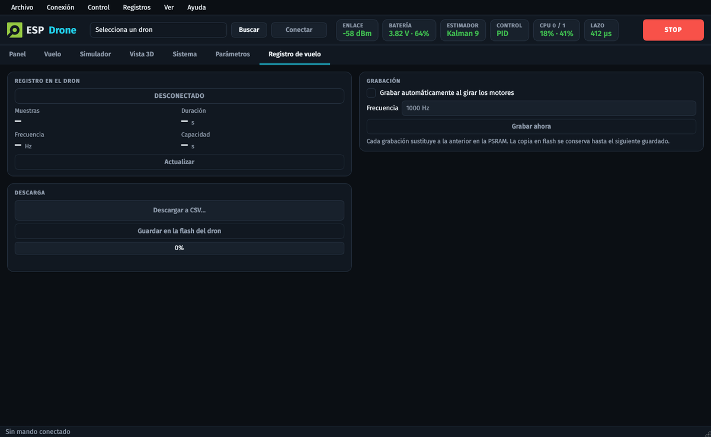

Parámetros y telemetría¶
Parámetros¶
Los parámetros se leen y escriben por radio, con el dron encendido. Los marcados como
persistentes pueden guardarse en la NVS y sobreviven a un reinicio. En edclient:
Parámetros (árbol completo, exportar y cargar) y Ajuste (ganancias). En edlib:
cf.param.set_value('grupo.nombre', 'valor').
Los más usados:
| Parámetro | Uso |
|---|---|
stabilizer.estimator / stabilizer.controller |
Ver Estimadores y controladores |
stabilizer.imuSync |
1: el lazo se sincroniza con el giroscopio (se aplica al reiniciar; en prueba) |
velCtlPid.thrustBase |
Empuje de hover para los modos asistidos |
imu.resetBias |
1: vuelve a medir el bias del acelerómetro (dron nivelado y quieto) |
system.nvsReset |
1: borra toda la configuración guardada y reinicia |
led.identify |
1: parpadea y pita para identificar el dron |
espnow.txPower / espnow.phyRate |
Potencia de transmisión y velocidad de la radio |
flog.autoRec, flog.div, flog.rec, flog.save |
Registro de vuelo |
batg.* |
Protección de batería (ver Seguridad) |
Telemetría (logs)¶
Los logs son variables que el dron envía periódicamente en bloques. Para que funcione también con el S2, cada bloque debe ocupar 28 B o menos; el S3 acepta hasta 56 B.
| Grupo | Contenido |
|---|---|
stateEstimate, stabilizer |
Posición, velocidad y actitud estimadas; tiempo del lazo (loopUs, loopMaxUs) |
controller, ctrltarget, posCtl |
Consignas y salidas del control |
motor |
PWM de cada motor (m1..m4) |
pm, batg |
Batería: voltaje, nivel, umbrales |
gyro, acc, baro, range, flow |
Sensores |
supervisor, health |
Estado: armado, volando, volcado, bloqueado |
sys, espnow |
Carga por núcleo, memoria, RSSI y paquetes perdidos |
kalman9, hybrid, compEst |
Internos de cada estimador |
Para ver los nombres exactos: pestaña Variables de log de edclient.
Registro de vuelo¶
El S3 graba a bordo, en la PSRAM, a una frecuencia de hasta 1 kHz:
- giroscopio, acelerómetro y actitud;
- posición y velocidad, con sus consignas;
- empuje, salidas del control y PWM de los motores;
- voltaje de la batería y tiempo del lazo.
No depende de la radio, así que no se pierden muestras.
- Por defecto empieza a grabar al girar los motores (
flog.autoRec). - Se descarga al aterrizar, desde Registro de vuelo en edclient o con el script de abajo.
--save(o Guardar en la flash del dron) lo copia a la particiónflogpara que sobreviva a apagar el dron.- Mientras se guarda en la flash, el dron no se puede armar.
- El CSV se puede repetir en el simulador.
python3 scripts/logging/flog_download.py espnow://<mac>?ch=11 vuelo.csv [--save]
